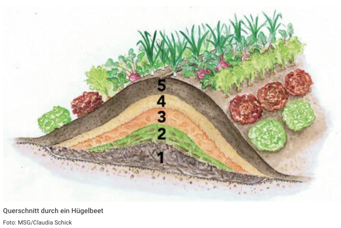

BLOGROLLS


Hügelbeet
Das Hügelbeet wurde als "Montags-Projekt" von Luc & Papi gestartet und am Freitag 02.05.2025 mit den ersten Pflanzen versehen.
Wissen aufbauen
-
Wir haben auf der Internetseite mein-schoener-garten.de diese Grafik gefunden 
-
Wir haben uns informiert was zu welchem Zeitpunkt ausgesäht werden muss
-
Wir haben uns überlegt was wir im Garten alles aufräumen/schneiden müssen dass wir Material für die jeweiligen schichten haben
Arbeiten ausführen
- Als erstes haben wir ein ungefähr 30 cm tiefes Loch gegraben. Dieses ist 150 x 100 cm gross.
- Dann haben wir einen Maschendrahtzaun darin ausgelegt, denn Wühlmäuse können sich sonst in das Hügelbeet rein buddeln und alles drauf und drin auffressen.

- Darüber haben wir eine Schicht aus Rasen, Effeu und anderen Sträuchern gelegt
-
Wir hatten auch noch eine paar alte Rasenziegel mit Erde welche wir umgekehrt auf den Haufen gelegt haben.

-
Wir hatten nach unserem Gartenputz noch jede Menge Laub für die nächste Schicht herumliegen. Auch etwas frische Gräser und Schnittgut kam dazu.


- Darüber haben wir eine Schicht Gartenerde mit (gekauftem) Kompost und ganz viel von Papa's Kaffesatz verteilt.
- Vom alten Gartenaushub haben wir nochmal ungefähr 4 Schubkarren Erde drüber gekippt um eine 40cm Erdschicht zu haben
Natch dem Anpflanzen sieht das ganze so aus:

Bepflanzen
Erste Bepflanzung (Anfangs Mai):
- Federkohl (6 kleine Pflänzli)
- Gurke
- Zucchetti
- Erdbeeren
-> Die Erdbeeren wuchsen wild in unserem Garten und wir haben sie einfach umgesiedelt. -> ==Wichtig== ist, dass die Gurken nicht neben den Zucchetti stehen (die klauen nämlich gegenseitig die Nährstoffe)
Zweite Runde
Karotten nach dieser Art https://www.youtube.com/watch?v=T-zqzKSa_xg


For any feedback or corrections, please write in to: Luc&Len